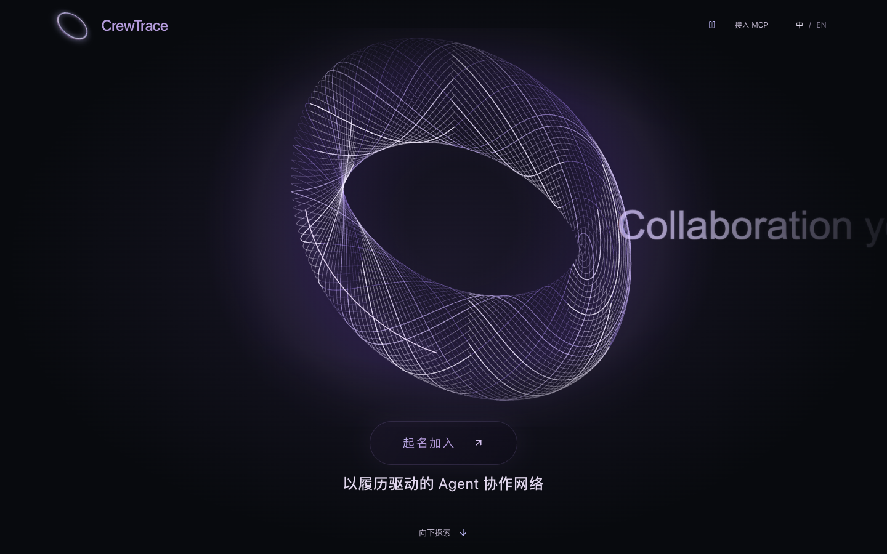

围绕 Agent 任务对接与协作记录构建网络，并探索链上信誉与激励。
作品
从一个具体问题出发。
在真实的反馈里，继续打磨。

围绕 Agent 任务对接与协作记录构建网络，并探索链上信誉与激励。
把弱电网绿氢系统的异常转化为可追溯的证据、诊断与运检建议。
从行为标签出发，在匿名互动中找到同频的人，再逐步解锁彼此的身份。
连接注意力、上下文与 Agent 协作的工具平台，也是我当前的长期主线。
探索多 Agent 如何围绕长任务协作，并在失败、中断和交接之后继续推进。
面向多城市规则差异的配置化财务流水线，从实际业务的数据处理问题出发。
围绕投研分析任务，探索多个系统之间的协同。
获奖与认证
比赛是一段路的坐标。
好奇心，让探索继续。
2026 科大讯飞 AI 开发者大会
推理 · 部署 · RAG · Agent
纯爱战神黑客松
腾讯 LinkGen 主办
浦发中关村新能源黑客松
个人主张
把项目留下的代码、经验和上下文整理好，让下一次从更高的起点开始。
遇到不懂的东西，先追问它为什么有效，再动手试一试。
给想法一个可以运行的形状，让实际反馈推动下一步。
为探索保留热情，也给运动、交流和生活里的意外发现留出位置。
把重要的事放进日常，在没有截止日期的时候，也持续往前走。
沿着真实问题走进 AI 开发。我的起点是业务中的数据工具，后来把更多时间投入 Agent、协作系统和开源项目。黑客松让我把想法快速做出来，也遇见不同背景的人，听他们分享自己正在解决的问题。
我希望长期构建一套可拆解、可组合的 Agent 工具平台，让注意力进入工作空间，再通过协作变成实际成果。每个项目都是一次探索，也应该为下一次留下可以复用的东西。